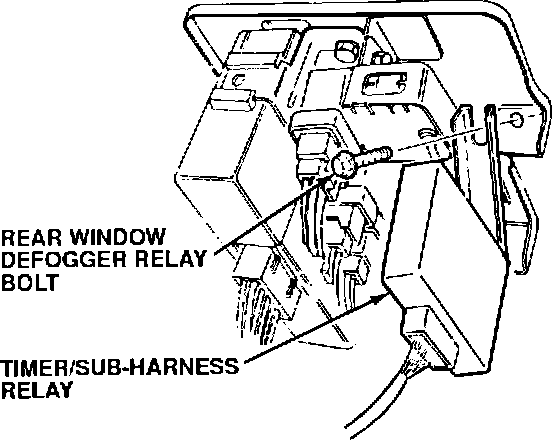
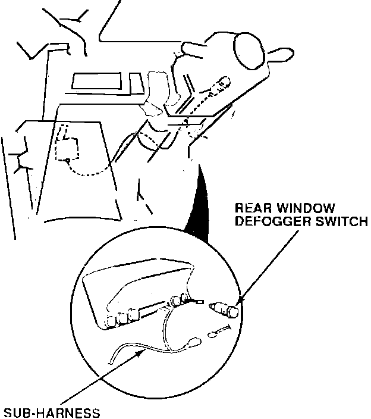
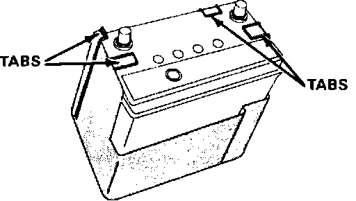

Battery - Premature Failure
91acura02
March 4, 1991
BULLETIN NO.
91-003
YEAR MODEL VIN APPLICATION
1986-1989 INTEGRA ALL
Premature Battery Failure
SYMPTOM
The customer complains that the battery is too low to crank the engine, yet testing indicates the starting and charging systems are operating normally.
PROBABLE CAUSE
Driving short distances at low engine speeds with the rear window defogger left ON will discharge the battery. Also, batteries subjected to high under-hood temperatures experience reduced service life.
CORRECTIVE ACTION
Install the proper charge kit listed under PARTS INFORMATION. The kit includes a rear window defogger timer/sub-harness, a battery shield box and wire ties.
NOTE: Tell the customer that to turn the defogger back on, the defogger switch must be pressed twice if:
^ The ignition switch is turned off with the defogger left on.
^ The defogger timer completes its cycle time (approximately 25 minutes).
1. Disconnect both battery cables (negative first, then positive), and remove the battery retaining bracket
2. Remove the dashboard lower panel front the driver's side of the car.
3. Locate the rear window defogger relay under the dash. Loosen the bolt securing it to the relay bracket.
4. Insert the timer/sub-harness bracket under the bolt, with the harness facing the steering column. Tighten the bolt.

NOTE: Attach the timer/sub-harness bracket to the rear window defogger relay bolt, not the relay bracket bolt.

5. Route the sub-harness to the rear window defogger switch. Secure the sub-harness to the main harness using the wire ties provided. Make sure the steering column does not pinch the sub-harness when the steering wheel is tilted down.
6. Push the rear defogger switch out through the dash, then unplug its connector. Plug the female connector of the sub-harness into the switch. Plug the male connector of the sub harness into the female switch connector.

7. Install the switch in the dash.
8. Reinstall dashboard lower panel.
9. Slide the shield down over the battery so the tabs are resting on top of the battery.
10. Install the battery retaining bracket and both battery cables (positive first, then the negative).
PARTS INFORMATION
1986-87 Integra Charge kit "A" P/N 06377-SD2-A01
Includes: Battery box shield
Timer/sub-harness
Wire ties (4)
1988-89 Integra Charge kit "B" P/N 06377-SD2-A11
Includes: Battery box shield
Timer/sub-harness
Wire ties (4)
WARRANTY CLAIM INFORMATION
In warranty: The normal warranty applies.
Out-of-warranty: Any repair performed after warranty expiration may be eligible for goodwill consideration by the District Service Manager. You must request consideration, and get the DSM's decision, before starting work.
Operation number: 727113
Flat rate time: 0.6 hour
Failed P/N: 35500-SD2-A02
Defect code: 067
Contention code: B02